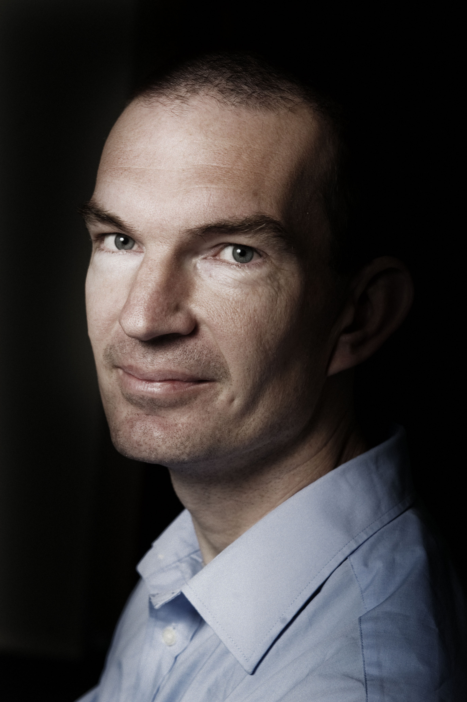

Home

Hallo, Ik ben Ruud Teunter
Ik ben Prof. Economie en Bedrijfskunde op de RUG
Dit is mijn website met informatie.
Ik ben momenteel hoogleraar aan de Rijksuniversiteit Groningen (RuG).
Daarvoor ben ik werkzaam geweest als onderzoeker en onderwijzer op universiteiten in Magdeburg (Duitsland), Thessaloniki (Griekenland), Lancaster (Engeland) en Rotterdam.
Ik doe met name onderzoek naar voorraadbeheersing; zie mijn wetenschappelijke artikelen of mijn blogs op het IMCC (bijvoorbeeld: https://www.imcc.nl/kennisartikel/autovoorraad-servicemonteur/). Daarnaast doe ik onder meer ook onderzoek naar service logistiek, omgaan met retouren en logistiek rondom windmolens op zee.
Ik geef les over voorraadbeheering aan master en PhD studenten.
Naast het doen van onderzoek en geven van onderwijs ben ik momenteel ook verantwoordelijk voor het onderzoek van de Operations groep binnen de Faculteit Economie en Bedrijfskunde van de RuG.
Verder ben ik redacteur van het grootste tijdschrift op het gebied van de besliskunde, genaamd de European Journal of Operational Research (https://www.journals.elsevier.com/european-journal-of-operational-research/editorial-board).
Besliskunde (‘Operational Research’ of ‘Decision Science’ in het Engels) kijkt naar het nemen van de beste beslissingen op allerlei gebieden zoals investeringen in aandelen, bouwen van nieuwe magazijnen, bepalen van prijzen, en dus ook het bepalen van de voorraden.